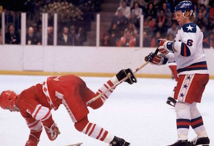

Competition

The Soviets, who had won every Winter Olympics ice hockey tournament since the United States took gold at the 1960 Olympics, were well-seasoned "amateurs" who were employed by industrial firms or military organizations for the sole purpose of playing hockey on their organization's team. It contained the core of the roster that had participated in the 1976 Canada Cup - although the Soviets only finished third in that tournament, they dominated a U.S. national team comprising the country's top professionals, winning 5-0 at the Philadelphia Spectrum.
In contrast to the professionals who represented the U.S. in September 1976, the 1980 American team was a collection of amateur college students, most from the rival schools of University of Minnesota and Boston University. The U.S. team did however, feature several highly promising players who went on to successful careers in the National Hockey League in the 1980s.
Three days before the Olympics, Coach Herb Brooks scheduled an exhibition game at Madison Square Garden in New York City against the Soviet team. The Americans lost 10–3, and defenseman Jack O'Callahan pulled a ligament in his knee, though he returned for the medal round of the Olympic tournament. Coach Brooks gave only a few interviews after the game, but blamed his early conservative strategy as a factor.
Despite these setbacks, Brooks managed to unify his players. He enjoyed one key advantage in contrast to the hastily-assembled Canada Cup teams in that he was able to train them for a year (the core of the team had been assembled since the 1979 World Ice Hockey Championships in Moscow), and lead them to victory.
The IIHF ceased running a championship in Olympic years. Nations that did not participate in the Lake Placid Olympics were invited to compete in the inaugural Thayer Tutt Trophy in Ljubljana, Yugoslavia.
Going into the games, the teams were ranked and divided into two groups. The ranking was: Soviet Union (1), Czechoslovakia (2), Sweden (3), Canada (4), Finland (5), West Germany (6), United States (7), Poland (8), Netherlands (9), Romania (10), Norway (11), Japan (12). East Germany was originally ranked tenth but declined to participate, with Japan filling their spot.